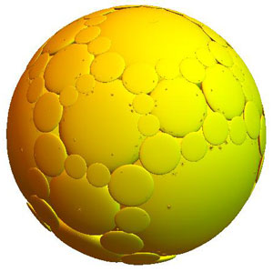
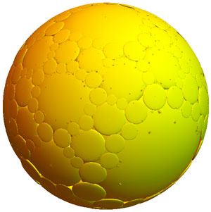
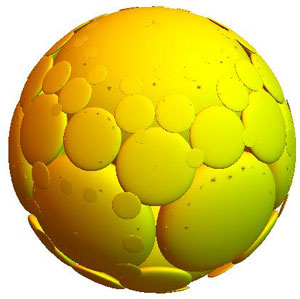
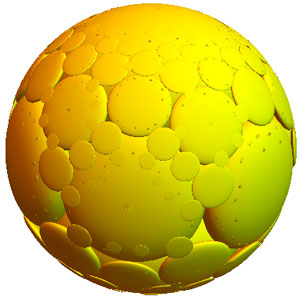

Structure and Visualization of Optimal Horoball Packings in 3-dimensional Hyperbolic Space
On this page we provide the computer code used to generate the figures in our paper with the above title. The paper may be found on ArXiv.
Mathematica Code Files
- Böröczky-Florian case for the (3,3,6) tiling: Group_fig_BF.nb
- Kozma-Szirmai Case for the (3,3,6) tiling: Group_Fig_KSz.nb
- Balanced case for the (4,3,6) tiling: Group_Fig_436_FacetMp.nb
- Maximal Case for the (4,3,6) tiling: Group_Fig_436_topMax.nb
Note: Adjust the "length" parameter to increase or decrease the layers of horoballs plotted. Values greater than 5 may cause Mathematica to crash while plotting depending on your system. By default we set "length=2" for two layers of horoballs.
About the Packings
Below are sample images from the code. We show the two optimal regular horoball packings of hyperbolic space that arise in the tessellation with Schläfli symbol (3,3,6). We use the Klein model of hyperbolic space. The images are produced by first plotting the balls in the fundamental domain of the tiling, and then generating the packing by applying elements of the Coxeter group of the tiling 4 and 5 times respectively.
Notice the fractal self-similar structure that arises from the embedding of the packing into Euclidean 3-space. The balls appear to have different sizes in the model sphere, but with respect to the hyperbolic metric all balls are congruent. The Klein model is not conformal so the horoballs appear as ellipsoids. For the proofs of the optimality of these packings see our paper.
Böröczky-Florian Case

4 crowns or layers

5 crowns or layers
Kozma-Szirmai Case

4 crowns or layers

5 crowns or layers